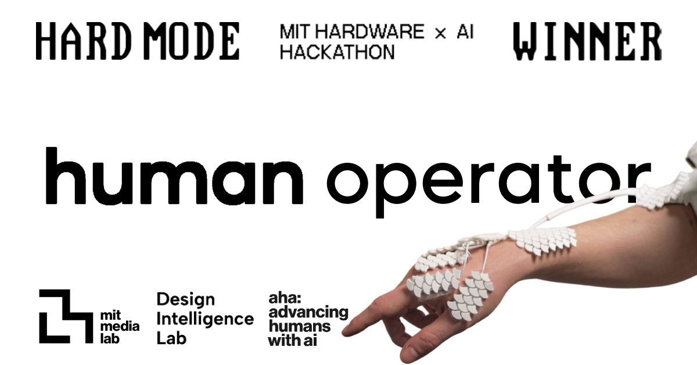
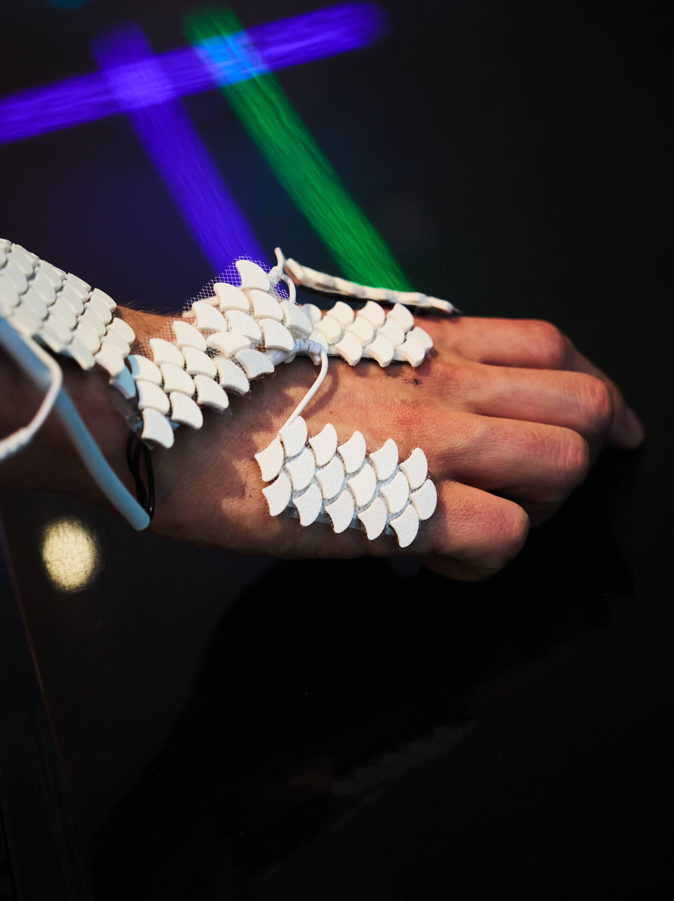

Hero Win Image
Winning team photo from MIT Hard Mode 2026.

A human augmentation tool that uses a Vision-Language Model and Electrical Muscle Stimulation (EMS) for AI-guided motor control.
Project Credit & Usage
Necessary Attribution
Human Operator by Peter He, Ashley Neall, Valdemar Danry, Daniel Kaijzer, Yutong Wu, and Sean Hardesty Lewis.
Descriptions
One line
Human Operator is a human augmentation tool that uses a Vision-Language Model and EMS for AI-guided motor control.
Short
Human Operator is a human augmentation tool that allows AI to briefly take control of your body to help you learn and do things you normally cannot do. It uses a Vision-Language Model for human motor control through Electrical Muscle Stimulation (EMS).
Long
Human Operator is a human augmentation tool that allows AI to briefly take control of your body to help you learn and do things you normally cannot do. To do this, it uses a Vision-Language Model for human motor control through Electrical Muscle Stimulation (EMS). Vision-based commands are generated via open-ended speech input through the Claude API to control finger and wrist stimulation for intuitive on-body interaction.
Downloads
Winning team photo from MIT Hard Mode 2026.

Wide project banner image.
Primary horizontal demo video.
Primary vertical demo video.

Electrodes and hand rig detail.
Another close shot of the setup.

Presenting the project at MIT.

Full hardware still.
Acknowledgments
Inspired by research and systems from the Human Computer Integration Lab at UChicago on neuromuscular interfaces and electrode placement optimization.
Safety
Human Operator is a prototype. It is not a medical device or a consumer product. EMS can be dangerous if misused and requires calibration, caution, and informed consent.
{kind=link}
{kind=link}
{kind=link}
{kind=link}
{kind=link}
{kind=link}